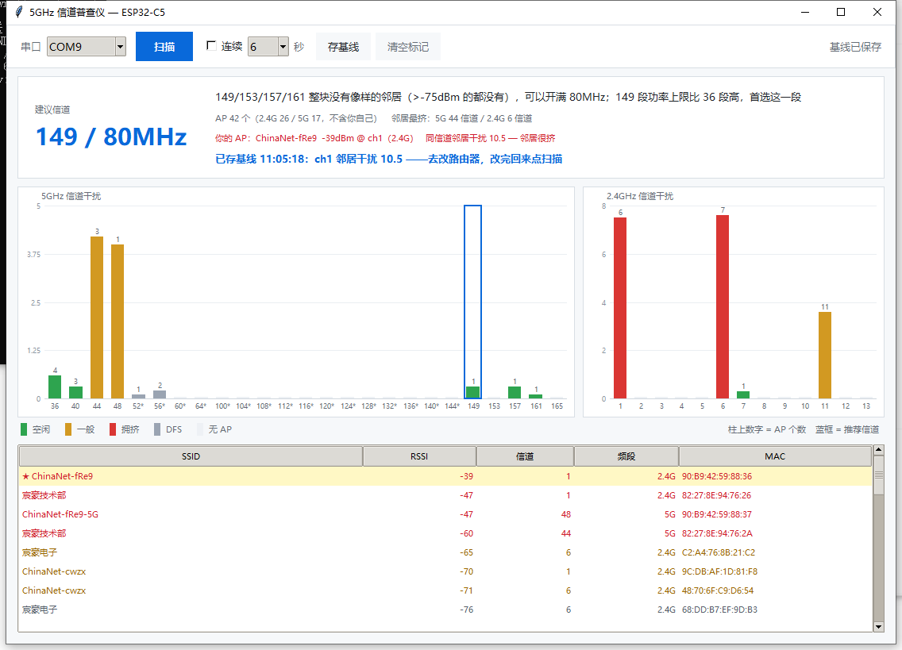

扫出周围所有 Wi-Fi AP · 算出 5GHz 哪个信道最干净 · 改信道前后做量化对比
打开 烧录台 → 连开发板 → 选 firmware/Bruce-c5-n32r8-chan5g.bin → 开始烧录。
用的是浏览器自带的 Web Serial，固件只在你电脑内存里直写芯片，不上传任何服务器。
需要 Chrome / Edge（Safari、Firefox 不支持 Web Serial）。
| 方式 | 需要装什么 | 适合 |
|---|---|---|
| 网页烧录台 | 只要 Chrome / Edge | 第一次用、不想碰命令行 |
firmware/刷机.bat | Python + esptool | 要批量刷、或网页版握手失败 |
| 命令行 esptool | Python + esptool | 自动化、CI |

左边 5GHz 25 个信道，蓝框是推荐信道；右边 2.4GHz。双击表格里属于你自己的那一行，把它标成「你的 AP」，统计时就会把它排除，只看邻居。
手机 App 做不到这些：系统只返回连过的和信号强的 AP。ESP32 是主动全信道扫描，一次 40+ 个接入点，2.4G 和 5G 一起扫。
| 设计 | 为什么 |
|---|---|
| 加权干扰分 | 不是数 AP 个数。一个 -40dBm 的隔壁路由器，比十个 -90dBm 的远邻居更值得躲 |
| 四阶段判定 | 80MHz 的带宽收益远大于躲信道。所以先试整块 80MHz，其次 40，再其次 20，DFS 是最后选项 |
| 排除自己 | 搬到一个空房间，不能说"这房间被我占了所以很挤"。标记自己的 AP 后统计时摘掉 |
| -75dBm 门限 | 隔两堵墙的 -85dBm 邻居在整段 80MHz 里几乎没有影响，为它放弃整段频谱不值 |